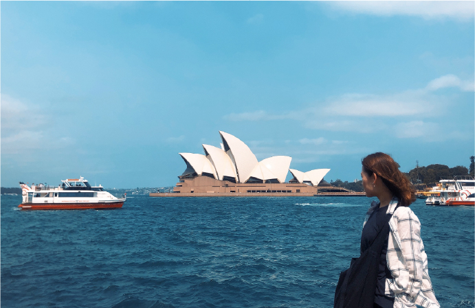

about
わたしのこと
誰かの喜びや笑顔になるよう、
気持ちを込めたデザイン作りを。
そして、人と人を繋ぐ
きっかけ作りができる存在に。

誰かの喜びや笑顔になるよう、
気持ちを込めたデザイン作りを。
そして、人と人を繋ぐ
きっかけ作りができる存在に。
たに みさき
Tani Miaski
- Date of birth：
- 1993.08.12
- Blood type：
- ??
- Height：
- 160cm
- Hometown：
- Osaka(moriguchi)
skill
できること
- Webデザインを勉強する上で、一番使用しました。Webサイトのカンプやバナーで使用し、パスの操作が得意です。
- 前職で、写真加工をメインによく使用していました。バナーも少し作成したこともあり、基本的な操作は可能です。
- ワイヤーフレームから、サイトの動きが分かるプロトタイプなど基本的な操作が可能です。
- カンプから再現性の高いサイト、見やすいコーディングを心がけます。Visual studio codeを使用しました。
-
レスポンシブデザインが可能です。
HTML同様、見やすく編集しやすいコーディングを心がけます。 - JavaScriptやjQueryを使って、部分的な動きを加える基本的なコードを書くことが可能です。
favorite
すきなこと
- fasion
- カジュアル、シンプル×一癖 な格好に惹かれます
- travel
- 海外旅行が好きで、次はアメリカ・メキシコに行ってみたいです
- shrine
- 御朱印集め始めました
- word
- 一期一会
- basketball
- 小5〜中3までしていて、たまに自分がプレイヤーの夢を見ます
- walk
- のんびりと音楽を聴きながら河川敷を散歩します